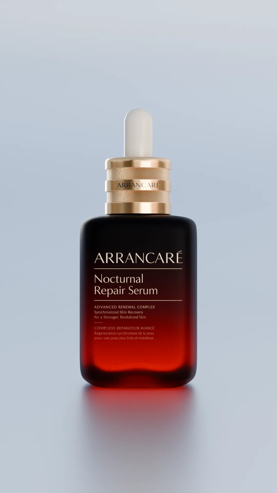
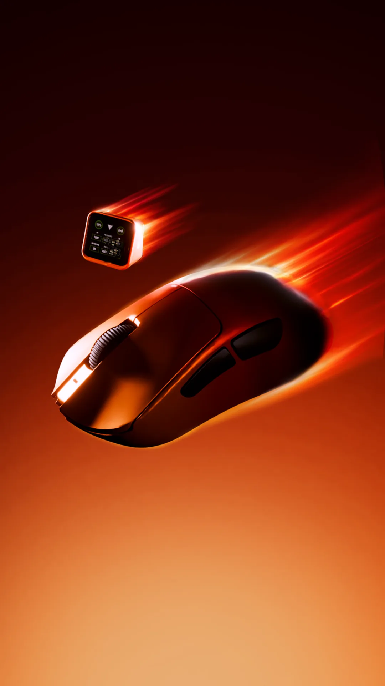
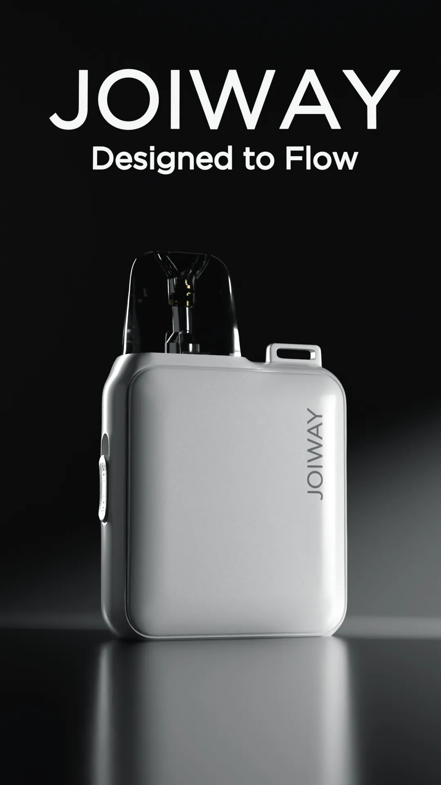
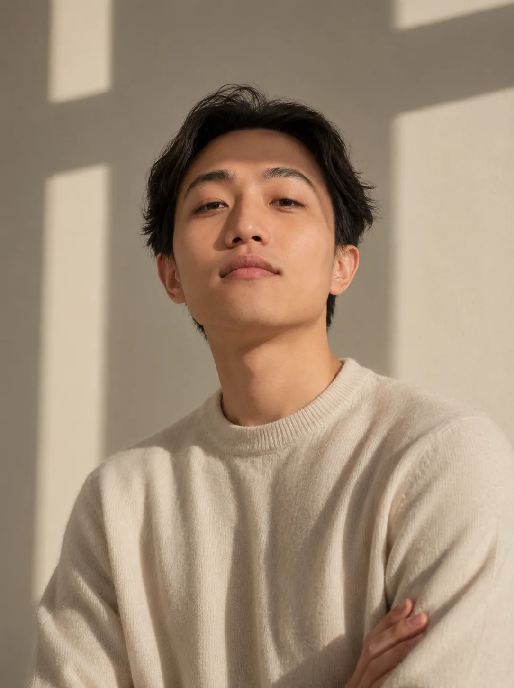

HERZ FOUNDRY
is a creative force dedicated to bringing products to their fullest visual potential.
Built on the belief that every product deserves to be seen by the right people, in the right way.
Every frame crafted with intention, precision, and obsession.




Product AnimationCGI Ad Creative3D Visualization
The work
Physical products, treated as characters. Four still studies move from hard reflections to soft atmosphere without losing the object at the center.
Motion systems
Four portrait reels built for the pace and scale of contemporary product campaigns. Select any frame to play or pause.
From direction to delivery
Drag across the frames to inspect the transformation, then follow the production path behind the finish.
Preview two
Production workflow
Discovery & Direction
We begin with detailed discussions to understand the project goals, creative direction, and technical requirements. This stage ensures clear alignment before production starts.
Concept Development
Storyboards, basic layouts, visual direction, and rough animatics are created to establish the overall pacing, composition, and structure of the project.
Production & Development
The main production phase where modeling, texturing, lighting, environments, and animations are carefully crafted.
Post-Production & Editing
Visuals are refined through color grading, editing, sound integration, and final adjustments to create a cohesive high-end presentation.
Asset Delivery
Delivery of the required and agreed-upon files and assets in their final formats.
Refinement & Revision
Final adjustments and refinements are made if necessary to ensure the project is fully polished and aligned with the intended vision.

Bayu Hermawan
3D Artist
I'm Bayu, a 3D artist based in Indonesia with 5 years of experience crafting visuals. The goal is simple, strip things to their core and show it to the world. HERZ Foundry is where that obsession lives. Every project regardless of scale is treated equally. The goal is to add real value to every project and hopefully help that business grow. My work is just one piece of a puzzle, but the right piece can make all the difference.
5+Years Experience
80+Projects Done
1-on-1Creative Collaboration
Product Animation
CGI Ad Creative
3D Visualization
Featured clients
Selected client marks from the HERZ FOUNDRY archive.
Got a project in mind? Let's make it happen.
Contact me directly to explore how we can elevate your physical concepts.